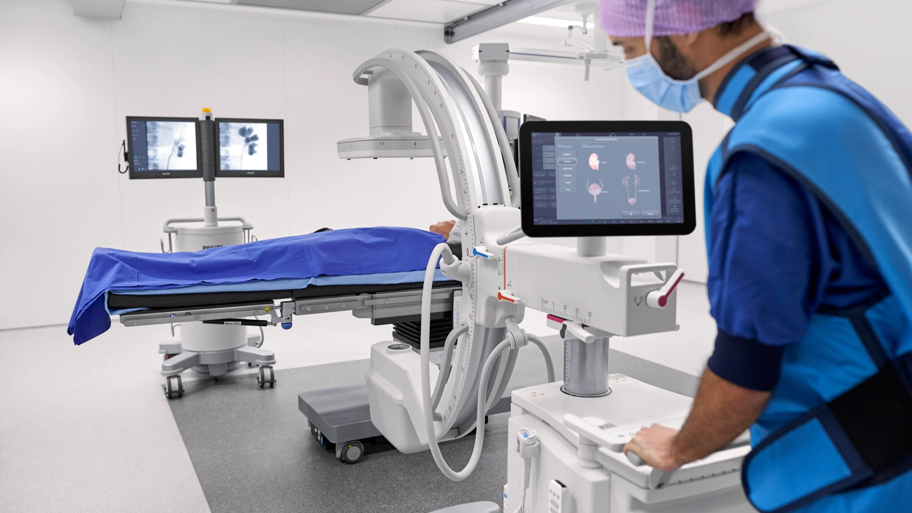

El Hospital de Urgencias tendrá su propia Unidad Hospitalaria de Procuración de Órganos y Tejidos, gracias a un convenio firmado por el viceintendente de la ciudad y el INCUCAI.
El mismo brindará asistencia técnica y financiera al establecimiento mediante el Programa Procurar, que busca incrementar la disponibilidad de órganos y tejidos para pacientes.
El Urgencias será uno de los cinco hospitales que forman parte de esta propuesta, que incluye también al Hospital Posadas (Morón, BA), Hospital Eva Perón (Merlo, BA), Hospital Dr. Federico Abete (Malvinas Argentinas, BA) y Hospital Perrando (Resistencia, Chaco).
De esta forma, el Municipio mejora la capacidad de respuesta a la demanda de trasplante en Córdoba, actividad que el Hospital de Urgencias lleva a cabo desde 1980 y de la cual fue referente durante esa década, acaparando una tercera parte de la actividad desarrollada en todo el país.